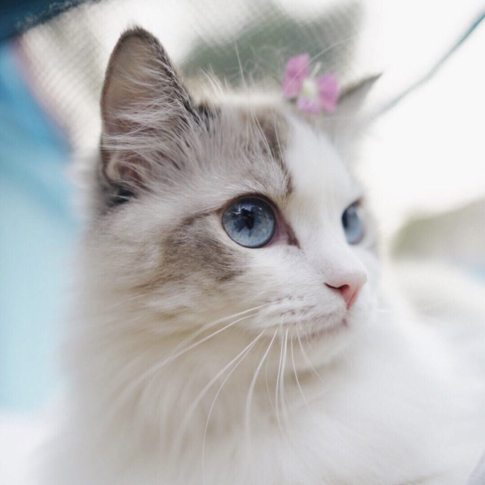
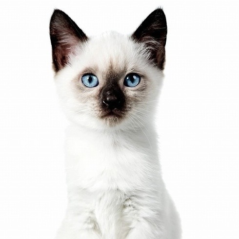
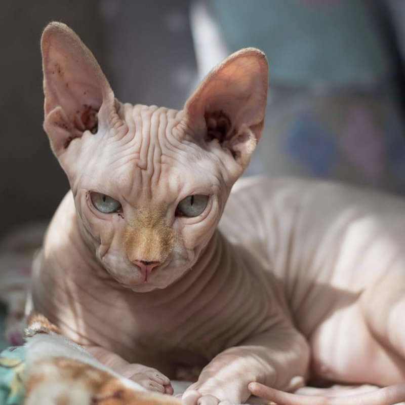
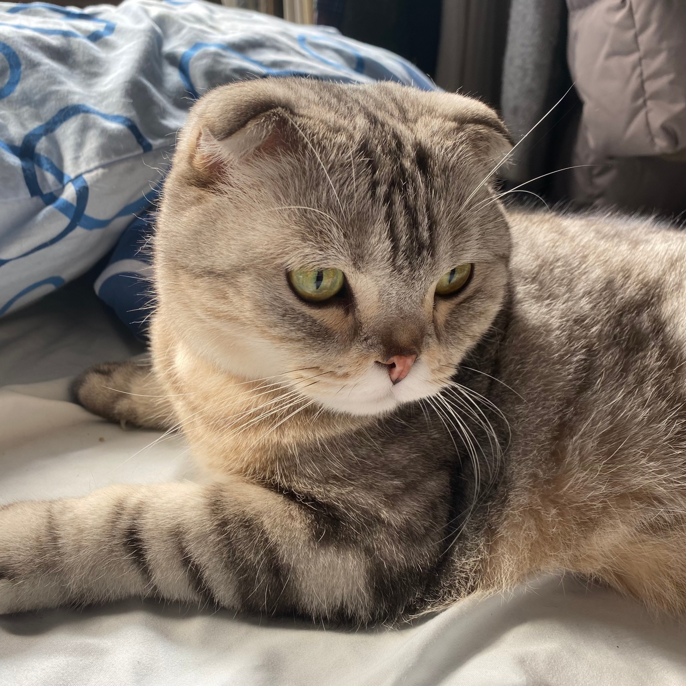
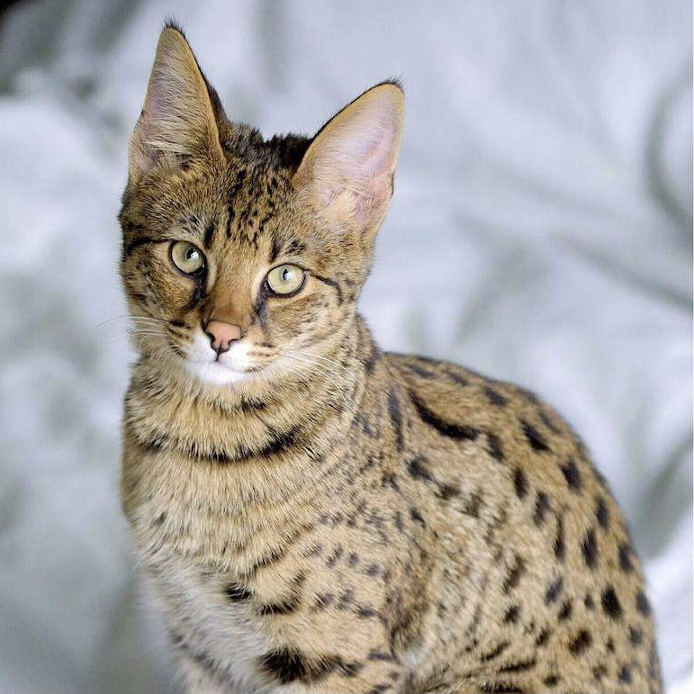
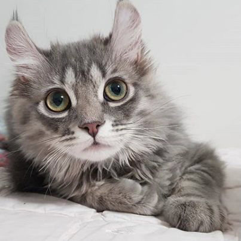
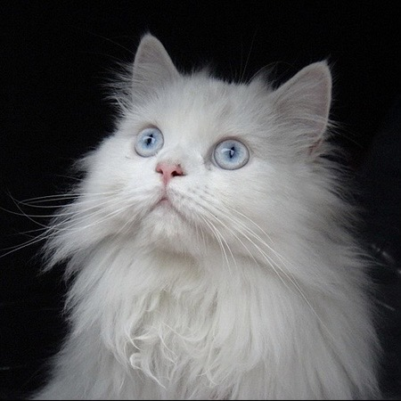
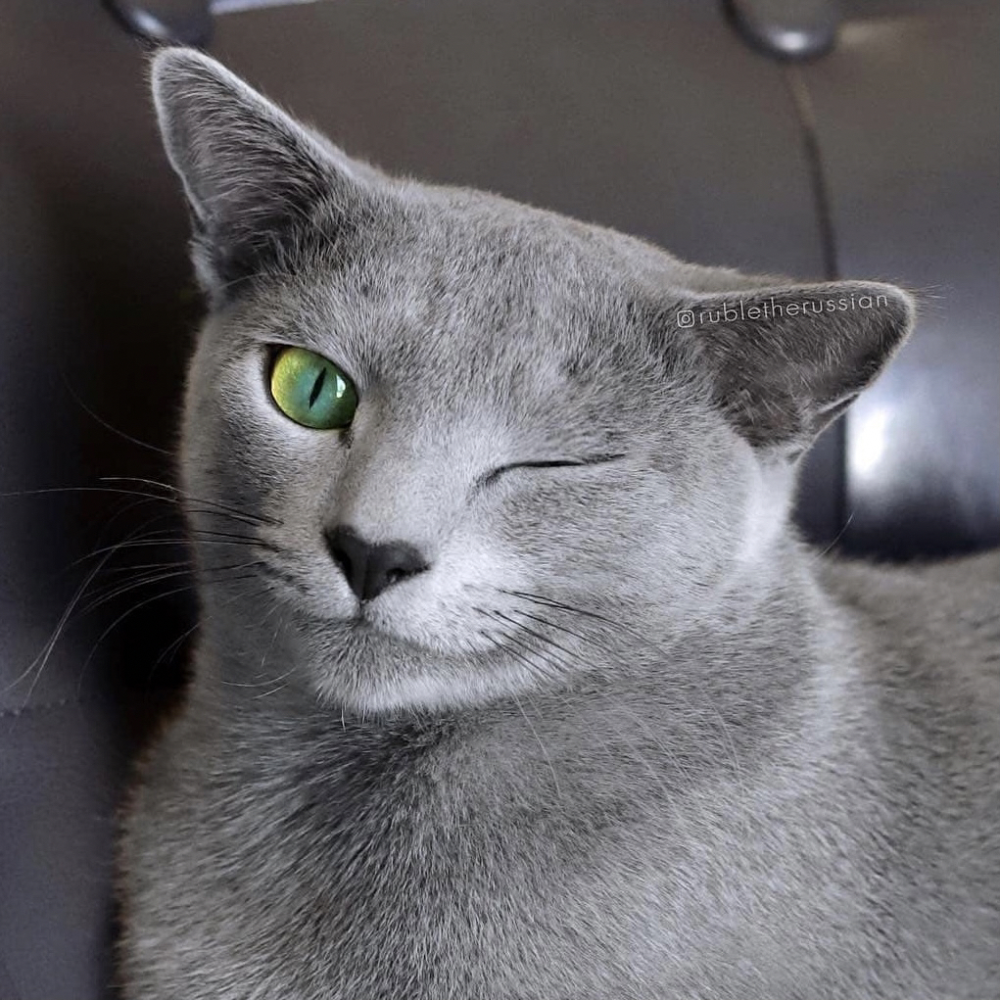

介紹貓咪
註冊
登入
回到首頁
交流區域
貓咪知識
英國短毛貓
看似泰迪熊
恬靜、溫馴、易於相處
精力充沛、貪玩

布偶貓
抱起來像柔軟的布偶
個性溫順、特別粘人
所以又叫Puppy cats

暹羅貓
活潑好動、聰明伶俐
動作敏捷、氣質高雅
體毛為均勻的單色

金佳羅貓
耳朵向上捲曲為特徵
被毛細膩、光滑
身體纖細且勻稱

折耳貓
耳朵基因突變
因軟骨不全所以摺耳
易生病痛、行動不便

孟加拉貓
金色毛及黑色斑紋
骨架結實、身體強壯
獨立性強、捕獵能力強

斯芬克斯貓
又稱加拿大無毛貓
肌肉發達、毛髮稀疏
對陽光十分敏感

波絲貓
有極長且蓬鬆的毛
相對較短的腿
以及較扁的臉部

俄羅斯藍貓
不常見的灰藍色毛
故被視為一種貴族貓
由藍銀色漸層毛色命名